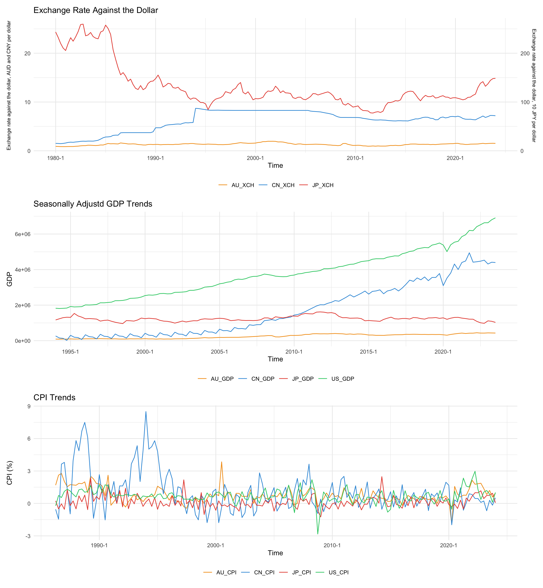
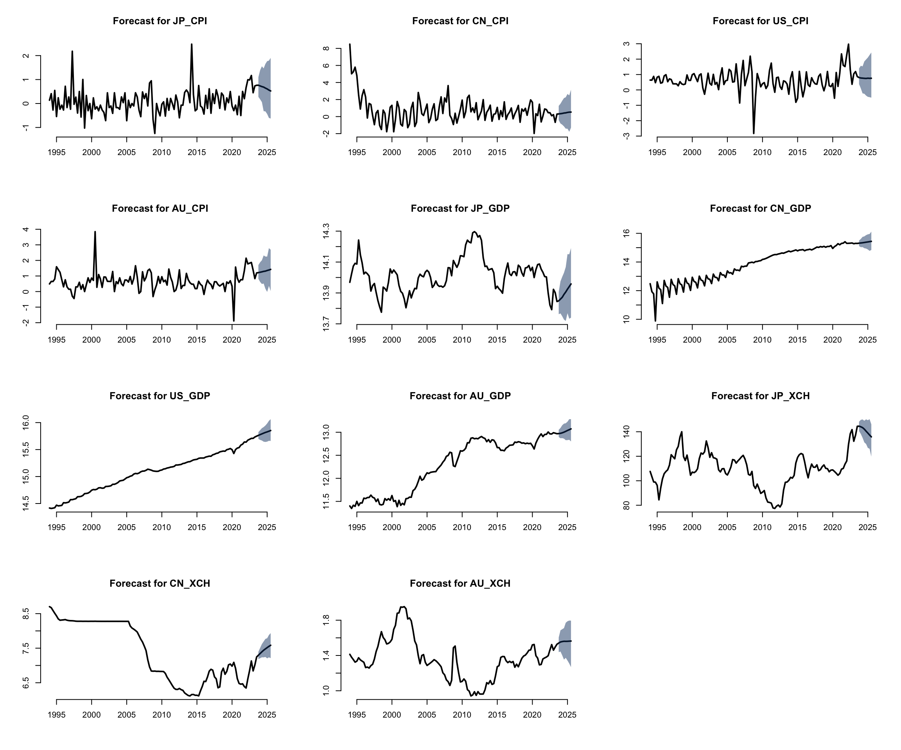

Global Echoes: Analyzing the Interplay of Economic Indicators Across Leading Economies
1. The Question Objective, and Motivation
Objective: Construct a Bayesian Vector Autoregression model to forecast major macroeconomic indicators for the United States, Australia, Japan, and China to facilitate an investigation into the prospective interdependencies between the economies of these nations.
Question: This research project will examine how trade relationships, investment flows, monetary policy environments, and economic performances within the United States, Australia, Japan and China mutually influence each other, and assess the implications of these interactions for predicting future values of these economic indicators.
Motivation: Since the onset of the COVID-19 pandemic, the global economic landscape has witnessed a series of unprecedented shifts in key macroeconomic indicators, spurred by governments’ adoption of varied expansionary monetary policies. Initially, to buffer their economies, many nations implemented expansive monetary strategies, later swiftly transitioning to interest rate hikes in a bid to manage surging inflation rates—a scenario not seen in decades. The pandemic’s disruption to trade further exacerbated inflationary pressures for some economies, highlighting the intricate interdependencies among major economies with significant trade and financial ties. This period recorded stark contrast in inflation levels, with unprecedented highs in the US and Australia and notably low inflation in China and Japan. Amidst this turmoil, a divergence in economic paths also became apparent, thei9 United States and Australia have witness robust economic rebounds, whereas China and Japan saw more tepid recoveries. This research aims to dissect the nuanced web of economic interdependencies between the United States, Australia, Japan, and China, analyzing how their trade relationships, investment flows, and monetary policy environments have mutually influenced their economic performances. Additionally, it seeks to understand the ramifications of these dynamics for the predictive accuracy of future economic indicators, offering insights into the evolving global economic order.
2. Data and their properties
Proposed Dataset: This study is uses data from the International Monetary Fund’s (IMF) database. The IMF data offers a comprehensive collection of global economic information; including several key databases such as the World Economic Outlook Databases, International Financial Statistics (IFS), Government Finance Statistics. This analysis will predominantly focus on the IFS database, which is composed of a sizeable collection of financial and economic data from across the global, featuring 1,681 distinct indicators such as consumer price index, interest rates, exchange rates, national accounts, government finance statistics. The data is available in various frequencies – annual, semi-annual, quarterly, monthly, daily, and weekly. As this research is primarily focused on analyzing macroeconomic data that are published on a monthly or quarterly basis, quarterly data from Q1 1994 to Q3 2023 will be used. The analysis will examine key macroeconomic variables including consumer price indexes, foreign direct investments, exchange rates, balance of payments, interest rates and the national gross domestic product of the United States, Australia, Japan, and China. sf Variables and Motivation:
| Variables | Original Unit | Final Unit | Mnemonic | Code |
|---|---|---|---|---|
| Prices, Consumer Price Index, All items, Previous period | % Change | % Change | % Change | CPI |
| Exchange Rates, Domestic Currency per U.S. Dollar, Period Average | per US dollar | per US dollar | XCH | ENDA_XDC_USD_R |
| Gross Domestic Product, Nominal, Seasonally Adjusted | Domestic Currency (millions) | log(US dollar) | GDP | NGDP_NSA_XDC |
The variables included in this study were chosen with the objective to include key economic indicators that are susceptible to changes in other nations while also ensuring relatively consistent measures exist for all four nations. These variables were chosen not only for their ability to provide insights into the trade relations, investment dynamics and monetary policy frameworks, but also for their roles as barometers of overall economic health and performance. Exchange rates directly impact trade balances and investment flows, influencing economic performances. By examining the volatility and trends in exchange rates, insights can be gleaned into how monetary policies and economic conditions in one country can affect its trade partners. GDP is the ultimate measure of economic performance, encapsulating the outcome of various economic activities and policies. Analyzing GDP allows for assessing economic momentum and comparing growth rates across countries and over time, offering a clear picture of economic health and trends. CPI was included because it is a crucial indicator of inflation, reflecting changes in the cost of living and purchasing power, and thus, is helpful in quantifying economic stability and monetary policy effectiveness in each nation. The presence of cyclical trends in the variables, alongside the observed impact of lagged values on future outcomes, highlights the suitability of the Bayesian Vector Autoregression model for our analysis. This model can well capture the temporal dynamics and interdependencies inherent in these economic indicators, offering a robust framework for understanding the nuanced interactions and feedback loops that characterize their behavior over time.
Data Plots
Stationarity Check
Stationary Tests
This section employs the Augmented Dickey-Fuller test to examine the null hypothesis that a unit root is present in these time series. A lag order of 4 was chosen for the ADF test given our data’s quarterly frequency. The results indicate that most of the macroeconomic indicators possess a unit root and are not stationary, with a few exceptions. Specifically, we have enough evidence to reject the null hypothesis for the CPI series in China and the United States at a 5% significance level. Interestingly, Japan’s GDP series is found to be unit-root stationary at this significance level. This implies that Japan’s GDP exhibits a consistent mean and variance over time, contrasting with the general trend observed in other national GDP series. Japan’s GDP growth has been known to be stagnant for quite some years and it’s macroeconomic indicators may respond differently to economic shocks compared to its non-stationary counterparts
| Dickey-Fuller Statistic | Lag Order | P-value | Country |
|---|---|---|---|
| -3.258408 | 4 | 0.08079872 | JP_CPI |
| -4.299916 | 4 | 0.01 | CN_CPI |
| -3.55799 | 4 | 0.0394958 | US_CPI |
| -3.333834 | 4 | 0.06822768 | AU_CPI |
| Dickey-Fuller Statistic | Lag Order | P-value | Country |
|---|---|---|---|
| -1.791111 | 4 | 0.6635047 | JP_XCH |
| -1.565957 | 4 | 0.7575635 | CN_XCH |
| -2.56175 | 4 | 0.3415666 | AU_XCH |
| Dickey-Fuller Statistic | Lag Order | P-value | Country |
|---|---|---|---|
| -3.499383 | 4 | 0.04535076 | JP_GDP |
| -2.472818 | 4 | 0.3802514 | CN_GDP |
| 0.7030938 | 4 | 0.99 | US_GDP |
| -2.030497 | 4 | 0.5639204 | AU_GDP |
The ACF plots of seasonally adjusted GDP data shows a strong autocorrelation at smaller lags and the autocorrelation decreases sharply as the lags increase. It is worth noting that the autocorrelations decreases much faster for Japan than for the other countries. Similar phenomenon is observed with exchange rates against the dollar for all three countries. It is worth noting that the autocorrelations for the Chinese series a more persistent than the others, possibly due to the fact that China has a managed floating exchange rate system, where the Chinese central banks sets a target exchange rate. The CPI data for all four countries shows generally low autocorrelation across lags, particularly beyond the first few periods. This suggests that CPI measurements are relatively independent from quarter to quarter. The alternating signs in the autocorrelation function (ACF) plot for Japan and US’s CPI data suggest possible seasonal effects, cyclical patterns or due to data collection methods.

3. The Model and Hypothesis
We will employ four models to address our proposed problem. Firstly, we will use a standard Bayesian Vector Autoregressive (BVAR) model with independently and identically distributed innovations, as outlined in details in Woźniak (2022). Additionally, we will investigate a large BVAR model with flexible error covariance structures, following the methodology proposed by Chan (2015). Specifically, the second model will incorporate MA(1) Gaussian innovations to better account for potential model misspecifications such as omitted variable bias and to facilitate shrinkage in VAR coefficients. Our third model will be a BVAR incorporating common stochastic volatilities to allow for time varying distribution of volatility terms, which will be useful to handle the impact of specific events like the Covid-19 Global Pandemic. The final model will combine a common stochastic volatility frame work with MA(1) Gaussian innovations, offering a robust approach to volatility modelling.
3.1 Model 1: Standard BVAR(p) Model
3.1.1 Model Specification
\[ Y = XA+E\] \[E|X \sim \mathcal{MN}_{T \times N}(0_{T \times N},\Sigma_{N \times N}, I_T)\] \[ A = \begin{bmatrix} \mu_0^T \\ A_1^T \\ \vdots \\ A_p^T \end{bmatrix} , \quad Y = \begin{bmatrix} y_1^T \\ y_2^T \\ \vdots \\ y_T^T \end{bmatrix} , \quad x_t = \begin{bmatrix} 1 \\ y_{t-1}^T \\ \vdots \\ y_{t-p}^T \end{bmatrix} , \quad X = \begin{bmatrix} x_1^T \\ x_2^T \\ \vdots \\ x_T^T \end{bmatrix} , \quad E = \begin{bmatrix} e_1^T \\ e_2^T \\ \vdots \\ e_T^T \end{bmatrix} \]
where
- \(T\) is the number of time periods under consideration
- \(N\) is the number of variables, in our case, N = 20
- \(P\) is the number of lags
- \(Y\) is a \(T \times N\) matrix of variables of response variables we aim to model.
- \(A\) is a \(K \times N\) matrix of coefficients, \(K = (1+ùëù\times N)\).
- \(E\) is a \(T \times N\) matrix of the error terms
- \(X\) is a \(T \times (1+ùëù\times N)\) matrix of covariates
- \(\Sigma\) is a \(N \times N\) matrix representing the row-specific covariance matrix
- \(I_T\) is a \(T \times T\) identity matrix representing the column specific covariance matrix
- \(E|X\) follows a matrix-variate normal distribution with mean \(0_{T \times N}\), row specific covariance matrix \(\Sigma_{N \times N}\) and column specific covariance matrix \(I_T\)
- \(x_{t}^T = \left( \begin{array}{cccc}1 & y_{t-1} & y_{t-2} & \cdots & y_{t-p} \end{array} \right)\)
In our specific application, the Y matrix is formulated as follows:
\[ Y = \begin{pmatrix} \text{CPI}_{\text{CN}, p+1} & \text{XCH}_{\text{CN}, p+1} & \log(\text{GDP})_{\text{CN}, p+1} & \text{CPI}_{\text{US}, p+1} & \log(\text{GDP})_{\text{US}, p+1} & \text{CPI}_{\text{JP}, p+1} & \text{XCH}_{\text{JP}, p+1} & \log(\text{GDP})_{\text{JP}, p+1} & \text{CPI}_{\text{AU}, p+1} & \text{XCH}_{\text{AU}, p+1} & \log(\text{GDP})_{\text{AU}, p+1} \\ \text{CPI}_{\text{CN}, p+2} & \text{XCH}_{\text{CN}, p+2} & \log(\text{GDP})_{\text{CN}, p+2} & \text{CPI}_{\text{US}, p+2} & \log(\text{GDP})_{\text{US}, p+2} & \text{CPI}_{\text{JP}, p+2} & \text{XCH}_{\text{JP}, p+2} & \log(\text{GDP})_{\text{JP}, p+2} & \text{CPI}_{\text{AU}, p+2} & \text{XCH}_{\text{AU}, p+2} & \log(\text{GDP})_{\text{AU}, p+2} \\ \vdots & \vdots & \vdots & \vdots & \vdots & \vdots & \vdots & \vdots & \vdots & \vdots & \vdots \\ \text{CPI}_{\text{CN}, T} & \text{XCH}_{\text{CN}, T} & \log(\text{GDP})_{\text{CN}, T} & \text{CPI}_{\text{US}, T} & \log(\text{GDP})_{\text{US}, T} & \text{CPI}_{\text{JP}, T} & \text{XCH}_{\text{JP}, T} & \log(\text{GDP})_{\text{JP}, T} & \text{CPI}_{\text{AU}, T} & \text{XCH}_{\text{AU}, T} & \log(\text{GDP})_{\text{AU}, T} \end{pmatrix} \]
The Bayesian Vector Autoregression model as formulated above provides a robust framework for investigating the relationships among selected economic indicators across different nations. By employing this model, this research aims to quantitatively measure the influence of one country’s economic indicators on another, such as how lagged changes in China’s i consumer price index may influence the GDP growth rate of the United States and vice versa. The BVAR model, with its estimation of coefficients across various lags, offers a deep understanding of both immediate and more delayed economic interactions, which is crucial to analyzing the cyclical nature of trade relationships, investment flows, monetary policy environments, and economic performances and the transmission of these metrics across borders.
The strength of this BVAR model lies in its ability to incorporate prior economic knowledge and beliefs into the estimation process. By setting prior distributions for the matrix of coefficients A and the covariance matrix \(\Sigma\), the model can be tailors to reflect established economic theories regarding international economic linkages and the time it takes for policy changes in one country to affect another. By calibrating the prior variances, particularly for the autoregressive coefficients, we can integrate prior knowledge or hypotheses, such as the presence of unit roots or the diminishing influence of distant lags on current values, into the analysis. When interpreting the estimation output, attention will be given to the posterior means and variances of the coefficients, which represent the model’s “learnt” understanding of the underlying economic structure. The analysis will be supplemented by forecast error variance decompositions to better understand the proportion of the movements in economic indicators that can be accounted for by their own shocks versus shocks to other variables.
The economic context underscoring this analysis is the increased globalization over the past decade, marking an era where economies are more intertwined than ever through trade, capital flows, and policy decisions. This period has witnessed not only the strengthening of global economic ties but also recent calls from political leaders advocating for a reduction in globalization. These contrasting dynamics highlight the complexity of the current global economic landscape, where the push for deeper integration coexists with growing sentiments for retrenchment. This dual trend sets the stage for our investigation, providing a rich context to explore how economic variables across nations influence each other amidst fluctuating levels of global interconnectedness. In this environment, understanding the cross-country spillover effects is vital for policymakers and businesses alike, as decisions made in one country can have far-reaching implications. By addressing these aspects, this research will contribute to the discourse on economic policy formulation, risk assessment, and strategic planning.
3.1.2 Prior Settings
We will employ a Normal-Inverse Wishart distribution for the joint distribution of coefficient matrices A and the row-specific variance matrix \(\Sigma\), and a Minnesota prior on the coefficients A. Specifically, we have:
\[\Sigma \sim \mathcal{IW}(S_0, \nu_0) \]
\[p(\Sigma) \propto |\Sigma|^{-\frac{\nu_0+N+1}{2}}exp(-\frac{1}{2}tr(\Sigma^{-1}S_0))\]
\[A|\Sigma \sim \mathcal{MN}_{K \times N}(A_0, \Sigma, V_A)\]
\[p(A|\Sigma) \propto |\Sigma|^{-\frac{K}{2}}exp(-\frac{1}{2}tr(\Sigma^{-1}(A-A_0)^T(A-A_0)))\]
\[(A,\Sigma) \sim \mathcal{NIW}_{K \times N} (A_0, V_A, S_0, \nu_0)\]
\[p(A,\Sigma) \propto |\Sigma|^{-\frac{K+\nu_0+N+1}{2}} \times exp(-\frac{1}{2}tr(\Sigma^{-1}S_0))\times exp(-\frac{1}{2}tr(\Sigma^{-1}(A-A_0)^T(A-A_0)))\]
where
\[V_A = diag(\kappa_2 \quad \kappa_1(\mathbf{p} \otimes I_N^T))\]
\[\mathbf{p} = [1 \quad 2 \quad ... \quad p]\] \[I_N = [1 \quad 1 \quad ... \quad 1] \in \mathbb{R}^N\] \[\kappa_1 \text{ is the overall shrinkage level for autoregressive slopes}\] \[\kappa_2 \text{ is the overall shrinkage lvel for the constant term }\]
Additionally, we adopt commonly used values for the hyperparameters as established in the literature.
\[A_0 = 0\]
\[v_0 = N+3\]
\[S_0 = I_N\]
\[\kappa_1 = 0.2^2 \quad \kappa_2 = 10^2\]
The hyperparameters \(\kappa_1\) and \(\kappa_2\) are specified in a way such that the coefficient associated with a lag l variable is shrunk more heavily as lag length increases whereas the intercepts are not shrunk to 0.
3.1.3 Posterior Distributions
The posterior distribution specified above has the form
\[p(Y|A, \Sigma) = (2\pi)^{-\frac{TN}{2}}|\Sigma|^{-\frac{T}{2}}exp(-\frac{1}{2}tr(\Sigma^{-1}(Y-XA)^T(Y-XA))\]
and the joint posterior distribution
\[p(A, \Sigma \mid Y) = \frac{p(A,\Sigma,Y)}{p(Y)}\propto p(A, \Sigma, Y) \propto p(Y|A,\Sigma)\times p(A,\Sigma) = p(Y|A,\Sigma) p(A \mid \Sigma) p(\Sigma)\]
\[\propto |\Sigma|^{-\frac{T}{2}}exp(-\frac{1}{2}tr(\Sigma^{-1}(Y-XA)^T(Y-XA))) \times\]
\[\mid \Sigma \mid^{-\frac{\nu_0+N+K}{2}}exp(-\frac{1}{2}tr(\Sigma^{-1}S_o))exp(-\frac{1}{2}tr(\Sigma^{-1}(A-A_0)^TV_A^{-1}(A-A_0))\]
\[\propto |\Sigma|^{-\frac{T+N+K+\nu_0+1}{2}} \times \exp (-\frac{1}{2}tr(\Sigma^{-1}S_0)) \times \]
\[exp(-\frac{1}{2}tr(\Sigma^{-1}(A_0^TV_a^{-1}A_0+Y^TY-\bar{A}^T\bar{V}^{-1}\bar{A})\times\] \[exp(-\frac{1}{2}tr(\Sigma^{-1}(A-\bar{A})^T\bar{V}^{-1}(A-\bar{A})))\] Hence,
\[p(A, \Sigma \mid Y, X) = p(A \mid Y, X, \Sigma) p(\Sigma \mid Y, X)\]
\[p(A \mid Y, X, \Sigma) = \mathcal{MN}_{k \times N}(\bar{A}, \Sigma, \bar{V})\]
\[p(\Sigma \mid Y, X) = \mathcal{IW}_N(\bar{S}, \bar{\nu})\]
where
\[\bar{V} = (X^TX + V_A^{-1})^{-1}\]
\[\bar{A} = \bar{V}(X^TY + V_A^{-1}A_0)\]
\[\bar{\nu} = T + \nu_0\]
\[\bar{S} = S_0 + Y^TY + A_0^TV_A^{-1}A_0 - \bar{A}^T\bar{V}^{-1}\bar{A}\]
3.1.4 Estimation Procedure
In this setting, we have
- \((A,\Sigma) \sim \mathcal{NIW}_{K \times N} (A_0, V_A, S_0, \nu_0)\)
then, prior draws can be sampled from
- \(\Sigma \sim \mathcal{IW}(S_0, \nu_0)\)
- \(A|\Sigma \sim \mathcal{MN}_{K \times N}(A_0, \Sigma, V_A)\)
we use the following Gibb’s Sampler algorithm to sample from the posterior distribution:
- Initialize \(\Sigma\) at \(\Sigma^0\)
- For \(s = 1,...,S_1+S_2\)
- Draw a sample \(A^{(s)}\) from \(p(A \mid Y, X, \Sigma^{(s-1)}) \sim \mathcal{MN}_{K \times N}(\bar{A}, \Sigma, \bar{V})\)
- Draw a sample \(\Sigma^{(s)}\) from \(p(\Sigma \mid Y, X, A^{(s)}) = \mathcal{IW}_N(\bar{S}, \bar{\nu})\)
We discard the first \(S_1\) sample draws to allow the algorithm to converge to the stationary posterior distributiion to obtain \(S_2\) sampled draws from the joint posterior distribution.
\[\left\{A^{(s)}, \Sigma^{(s)}\right\}_{s=S_1+1}^{S_1+S_2}\]
The draws from joint predictive density can then be obtained using the following algorithm:
- Sample S draws \(\left\{ A^{(s)}, \Sigma^{(s)} \right\}_{s=1}^{S}\) from \(p(A,\Sigma|Y, X)\)
- Sample S draws \(\left\{ Y_{t+h}^{(s)} \right\}_{s=1}^S\) from \(Y_{t+h}^{(s)} \sim \mathcal{N}_{hN}(Y_{t+h|t}(A^{(s)}), \mathbb{V}ar[Y_{t+h|t}|A^{(s)}, \Sigma^{(s)}])\)
where
\[\underset{\text{hN} \times1}{Y_{t+h}} = \begin{pmatrix} Y_{t+1} \\ Y_{t+2} \\ \vdots \\ Y_{t+h} \end{pmatrix}\]
To derive the posterior predictive density for \(Y_{t+h}\), we first note that:
\[p(Y_{t+h}|Y_{t}) = \int \int p(Y_{t+h}|Y_{t},A, \Sigma)\times p(A,\Sigma|Y,X)dAd\Sigma\] where
\[p(y_{t+h}|Y, X, A, \Sigma, I_T) \sim \mathcal{N}_{hN} (Y_{t+h|t}(A), Var(Y_{t+h}|A, \Sigma))\]
\[Y_{t+h|t}(A) =\begin{pmatrix} Y_{t+1|t} \\ Y_{t+2|t} \\ \vdots \\ Y_{t+h|t} \end{pmatrix} = \begin{pmatrix} \mu_0 + A_1 Y_t + \cdots + A_pY_{t-p+1|t} \\ \mu_0 + A_1 Y_{t+1|t} + \cdots + A_p Y_{t-p+2|t}\\ \vdots \\ \mu_0 + A_1 Y_{t+h-1|t} + \cdots + A_p Y_{t+h-p|t} \end{pmatrix}\]
\[\underset{\text{(hN-1)} \times \text{(hN-1)}}{\mathbb{V}ar(Y_{t+h|t}|A, \Sigma)} = \begin{pmatrix} \Sigma & \Sigma \phi_1^T & \cdots & \Sigma \phi_{h-1}^T \\ \phi_1\Sigma &\Sigma + \phi_1 \Sigma \phi_1^T & \cdots & \Sigma \phi_1^T + \phi_1 \Sigma \phi_2^T+ \cdots + \phi_{h-2}\Sigma \phi_{h-1}^T + \phi_{h-1} \Sigma \phi_{h}^T \\ \vdots & \vdots & \ddots & \vdots \\ \phi_{h-1}\Sigma\ & \phi_1\Sigma + \phi_2 \Sigma \Phi_1^T + \cdots + \phi_{h} \Sigma \phi_{h-1}^T & \cdots & \Sigma + \phi_1 \Sigma \phi_1^T + \cdots+\phi_{h-2}\Sigma\phi_{h-2}^T+\phi_{h-1}\Sigma\phi_{h-1}^T \end{pmatrix} \]
where \(\phi_i = J A^i J'\) are the parameters of the VMA(\(\infty\)) representation of VAR(\(p\)) and \(A\) is the parameter matrix of \(VAR(1)\) representation of VAR(\(p\)). \(A^i\) is the matrix \(A\) raised to the power of \(i\). \[ \underset{Np \times Np}{A} = \begin{pmatrix} A_1 & A_2 & \cdots & A_{p-1} & A_p \\ I_N & 0_{N \times N} & \cdots & 0_{N \times N} & 0_{N \times N} \\ 0 & I_N & \cdots & 0 & 0 \\ \vdots & \vdots & \ddots & \vdots & \vdots \\ 0 & 0 & \cdots & I_N & 0 \end{pmatrix} \qquad \underset{\text{N} \times \text{Np}}{J} = [I_N \quad 0_{N \times N(p-1)}] \] \[p(A|Y, X, \Sigma) \sim \mathcal{MN}_{K \times N}(\bar{A}, \Sigma, \bar{V})\] \[p(\Sigma \mid Y, X) = \mathcal{IW}_N(\bar{S}, \bar{\nu})\] as before. In this approach, we are incorporating into our prediction the uncertainties in the estimates of the parameters by integrating over \(A\) and \(\Sigma\).
3.1.5 Test for Granger Causality
Granger causality testing, introduced in Granger (1969), is a way to measure whether the past and current values of one time series contains useful information for predicting future values of another. The idea behind granger causality testing is that if a time series does contain predictive information about another, incorporating it into the model should reduce the error variance and improve the precision of the forecasts. The classical approach for testing causality is the Wald test, but it fails to quantify the degree of evidence in the data in favour of or against the causality hypothesis. The Bayesian approach to testing Granger causality based on Baye’s factor, on the other hand, has the ability to quantify the evidence for and against the hypothesis with a single number. The Baye’s factor is defined as:
\[B_H = \frac{p[H_0|Y]}{p[H_1|Y]}\] In the context of testing for VAR(p) models, we have the marginal likelihood under the assumption of no Granger causality is:
\[p_0(Y) = \int p_1(Y| A_{ij} = 0, A_{-(ij)})dA_{-(ij)} = p_1(Y|A_{ij}=0)\] using Baye’s rule, we have: \[p_0(Y) = \frac{p_1(A_{ij} = 0|Y) \times p_1(Y)}{p_1(A_{ij} = 0)}\] We divide the above equation by \(p(y_t|H_1)\) to get Baye’s factor:
\[B_H = \frac{p_0(Y)}{p_1(Y)} = \frac{p_1(A_{ij} = 0|Y)}{p_1(A_{ij} = 0)}=\frac{\int p_1(A_{ij=0}|Y, \Sigma)d \Sigma}{\int p(A_{ij}=0, \Sigma)d\Sigma}\]
and the integration is performed using numerical integration methods. The second part is also known as the Savage-Dickey density ratio estimator, which is the ratio of the posterior over the prior density evaluated at \(A_{ij} = 0\). Indicative values for interpreting Bayes factors is provided below:
To test for Granger causality, we use the equation: \[B_H = \frac{p_1(A_{ij} = 0|Y)}{p(A_{ij}=0)} \] A value much greater than 1 would indicate that the posterior distribution has a higher probability density at \(A_{ij} = 0\) than the prior, hence the data provides evidence for the null hypothesis that \(A_{ij} = 0\). Conversely, a value much smaller than 1 would suggest that the data provides evidence against the null hypothesis.
3.2 Model 2: Large BVAR model with MA(1) Gaussian Innovations
Incorporating MA(1) Gaussian innovations in a large BVARs model can lead to a significant enhancement over traditional BVAR models, especially when forecasting macroeconomic variables, for several reasons. By allowing for serial correlation in the innovations term, we will be able to capture the momentum or persistence in economic variables that is often observed in real-world data. Recognizing that shocks may have a lasting impact over several periods can enhance the model’s ability to predict future values by considering the path-dependent nature of the economy. In addition, our BVAR model with common stochastic volatility is a natural extension to the standard BVAR model and formulated as below:
3.2.1 Model Specification
\[ Y = XA+E\] \[E|X \sim \mathcal{MN}_{T \times N}(0_{T \times N},\Sigma_{N \times N}, \Omega_{T \times T})\] \[ A = \begin{bmatrix} \mu_0^T \\ A_1^T \\ \vdots \\ A_p^T \end{bmatrix} , \quad Y = \begin{bmatrix} y_1^T \\ y_2^T \\ \vdots \\ y_T^T \end{bmatrix} , \quad x_t = \begin{bmatrix} 1 \\ y_{t-1}^T \\ \vdots \\ y_{t-p}^T \end{bmatrix} , \quad X = \begin{bmatrix} x_1^T \\ x_2^T \\ \vdots \\ x_T^T \end{bmatrix} , \quad E = \begin{bmatrix} e_1^T \\ e_2^T \\ \vdots \\ e_T^T \end{bmatrix} \]
where
- \(T\) is the number of time periods under consideration
- \(N\) is the number of variables, in our case, N = 20
- \(P\) is the number of lags
- \(Y\) is a \(T \times N\) matrix of variables of response variables we aim to model.
- \(A\) is a \(K \times N\) matrix of coefficients, \(K = (1+ùëù\times N)\).
- \(E\) is a \(T \times N\) matrix of the error terms
- \(X\) is a \(T \times (1+ùëù\times N)\) matrix of covariates
- \(\Sigma\) is a \(N \times N\) matrix representing the row-specific covariance matrix
- \(\Omega\) is a \(T \times T\) identity matrix representing the column specific covariance matrix
- \(E|X\) follows a matrix-variate normal distribution with mean \(0_{T \times N}\), row specific covariance matrix \(\Sigma_{N \times N}\) and column specific covariance matrix \(I_T\)
with MA(1) innovations, we have, for i = 1,….,N and t = 1,…,T, \[e_{t, i} = \eta_{t, i} + \psi \eta_{t-1, i}\] where \(|\psi|<1\) and \(\eta_{t,i} \sim \mathcal{N}(0,1)\)
In matrix notation, we have:
\[e_i = H_{\psi} \eta_i\]
where
\[ e_i = \begin{bmatrix} e_{1, i} \\ e_{2, i} \\ \vdots \\ e_{T, i} \end{bmatrix} \qquad \eta_i = \begin{bmatrix} \eta_{1, i} \\ \eta_{2, i} \\ \vdots \\ \eta_{T, i} \end{bmatrix} \qquad H_{\psi} = \left( \begin{array}{cccc} 1 & 0 & \cdots & 0 \\ \psi & 1 & \cdots & 0 \\ \vdots & \ddots & \ddots & \vdots \\ 0 & \cdots & \psi & 1 \end{array} \right) \qquad O_{\psi} = diag(1+\psi^2, 1, ..., 1) \]
Hence, we have
\[E \sim \mathcal{N}(0, H_{\psi}O_{\psi}H_{\psi}^T) \qquad \qquad \Omega = H_{\psi}O_{\psi}H_{\psi}^T\] Note that the covariance matrix \(\Omega\) depends on \(\psi\) only.
3.2.2 Prior Specification
We consider a prior independent distributions for \((A, \Sigma, \Omega)\), specifically, we have: \[P(A, \Sigma, \Omega) = P(A, \Sigma) \times P(\Omega)\]
We will employ a Normal-Inverse Wishart distribution for the joint distribution of A and \(\Sigma\) and before, \[(A,\Sigma) \sim \mathcal{NIW}_{K \times N}(A_0, V_A, S_0, \nu_0)\]
We apply a truncated normal prior on \(\psi\), \[\psi \sim \mathcal{N}(\psi_0, V_{\psi})\mathbb{1}_{\{|\psi|<1\}}\]
For estimation purposes, we initialize with the following setting:
- \(e_{i1} \sim \mathcal{N}(0, 1+\psi^2)\)
- \(\psi_0 = 0\) and \(V_{\psi} = 1\) so that the prior centers around 0 with a relatively large variance and has support within (-1, 1)
3.2.3 Posterior Distributions
- The posterior distribution of Y specified above has the form:
\[p(Y|A, \Sigma) = (2\pi)^{-\frac{Tn}{2}}|\Sigma|^{-\frac{T}{2}}|\Omega|^{-\frac{N}{2}}exp(-\frac{1}{2}tr(\Sigma^{-1}(Y-XA)^T\Omega^{-1}(Y-XA))\]
\[= (2\pi)^{-\frac{Tn}{2}}|\Sigma|^{-\frac{T}{2}}(1+\psi^2)^{-\frac{N}{2}}exp(-\frac{1}{2}tr(\Sigma^{-1}(Y-XA)^T(H_{\psi}O_{\psi}H_{\psi}^T)^{-1}(Y-XA))\]
- The joint posterior distribution of A and \(\Sigma\) can be derived as follows:
\[p(A, \Sigma \mid Y, \Omega) = \frac{p(A,\Sigma,Y, \Omega)}{p(Y, \Omega)}\] \[\propto p(A, \Sigma, Y, \Omega) \propto p(Y \mid A,\Sigma, \Omega)\times p(A,\Sigma, \Omega)\] \[= p(Y \mid A,\Sigma, \Omega) p(A, \Sigma) p(\Omega) = p(Y \mid A,\Sigma, \Omega) p(A \mid \Sigma) p(\Sigma) p(\Omega)\]
\[\propto p(Y \mid A,\Sigma, \Omega) p(A \mid \Sigma) p(\Sigma)\]
\[\propto |\Sigma|^{-\frac{T}{2}}exp(-\frac{1}{2}tr(\Sigma^{-1}(Y-XA)^T\Omega^{-1}(Y-XA)) \times\]
\[\mid \Sigma \mid^{-\frac{\nu_0+N+K}{2}}exp(-\frac{1}{2}tr(\Sigma^{-1}S_o))exp(-\frac{1}{2}tr(\Sigma^{-1}(A-A_0)^TV_A^{-1}(A-A_0))\]
\[\propto |\Sigma|^{-\frac{T+N+K+\nu_0+1}{2}} \times \exp (-\frac{1}{2}tr(\Sigma^{-1}S_0)) \times \] \[exp(-\frac{1}{2}tr(\Sigma^{-1}(A_0^TV_a^{-1}A_0+Y^T\Omega^{-1}Y-\bar{A}^T\bar{V}^{-1}\bar{A})\times\] \[exp(-\frac{1}{2}tr(\Sigma^{-1}(A-\bar{A})^T\bar{V}^{-1}(A-\bar{A})))\]
Hence,
\[p(A, \Sigma \mid Y, X) = p(A \mid Y, X, \Sigma) p(\Sigma \mid Y, X)\]
\[p(A \mid Y, X, \Sigma, \Omega) = \mathcal{MN}_{K \times N}(\bar{A}, \Sigma, \bar{V})\]
\[p(\Sigma \mid Y, X) = \mathcal{IW}_N(\bar{S}, \bar{\nu})\]
where
\[\bar{V} = (X^T\Omega^{-1}X + V_A^{-1})^{-1}\]
\[\bar{A} = \bar{V}(X^T\Omega^{-1}Y + V_A^{-1}A_0)\]
\[\bar{\nu} = T + \nu_0\]
\[\bar{S} = S_0 + Y^T\Omega^{-1}Y + A_0^TV_A^{-1}A_0 - \bar{A}^T\bar{V}^{-1}\bar{A}\] 3. The posterior distribution for the parameter \(\psi\) can be obtained as follows: \[P(\psi|Y, A, \Sigma) = \frac{P(\psi, Y, A, \Sigma)}{P(Y, A, \Sigma)} \propto P(\psi, Y, A, \Sigma) = P(Y|A, \Sigma, \psi) \times P(A,\Sigma, \psi) \]
\[= P(Y|A, \Sigma, \psi) \times P(A, \Sigma) \times P(\psi) \propto P(Y|A, \Sigma, \psi) \times P(\psi)\]
we can sample from the posterior distribution of \(\psi\) using an independence-chain Metropolis-Hastings algorithm.
3.2.4 Estimation Procedure
We obtain posterior estimates of \(A, \Sigma, \psi\) using a Gibbs sampler, specifically, we initialize \(\psi^{(0)}\) and for s = 1,…,S1+S2, we sequentially sample:
- \(\Sigma^{(s)} | Y, X, \psi^{(s-1)} \sim \mathcal{IW}_N(\bar{S}, \bar{\nu})\)
- \(A^{(s)} | Y, X, \Sigma^{(s)}, \psi^{(s-1)} \sim \mathcal{MN}_{k \times N}(\bar{A}, \Sigma^{(s)}, \bar{V})\)
- \(\psi^{(s)} | Y, X, A^{(s)}, \Sigma^{(s)} \propto P(Y|A^{(s)}, \Sigma^{(s)}, \psi^{s-1})\times p(\psi)\)
The Metropolis-Hastings Algorithm for Sampling \(\psi\) is given as follows:
Initialization:
- Choose an initial value \(\psi^{(0)}\) within the bounds \((-1, 1)\).
Proposal Distribution:
- Select the proposal distribution \(q(\psi' | \psi^{(t)}) \sim N(\psi^{(t)}, \tau^2)\). \(\tau^2\) is a tuning parameter that controls the step size.
Sampling Loop:
For t = 1,…,\(T_1+T_2\)
Generate a candidate \(\psi'^{(t)}\) from \(q(\psi' | \psi^{(t-1)})\).
Check if \(\psi'\) is within the bounds \((-1, 1)\). If not, reject \(\psi'\) (set \(\alpha = 0\)).
Compute the acceptance ratio \(\alpha\): \[ \alpha(\psi^{(t-1)}, \psi') = \min\left(1, \frac{p(Y | A, \Sigma, \psi') p(\psi') q(\psi^{(t-1)} | \psi')}{p(Y | A, \Sigma, \psi^{(t-1)}) p(\psi^{(t-1)}) q(\psi' | \psi^{(t-1)})}\right)\]
Decide to accept or reject:
Generate a random number \(u\) from \(U[0,1]\).
If \(u \leq \alpha\), accept \(\psi'\) and set \(\psi^{(t)} = \psi'\).
Otherwise, reject \(\psi'\) and set \(\psi^{(t)} = \psi^{(t-1)}\).
Burn in period
- Discard the first \(T_1\) samples to allow the algorithm to converge to the true distribution
Obtain one sample of \(\psi\)
- Randomly draw a \(\psi^*\) from the \(T_2\) draws and set \(\psi^{(s)} = \psi^*\)
When combined with Gibbs sampling for the estimation of \(A\) and \(\Sigma\), the Metropolis-Hastings step can be embedded into the Gibbs sampler, a method known as Metropolis-within-Gibbs sampling. In this approach, one sample from the Metropolis-Hastings step is generated per Gibbs iteration. Detailed proofs and explanations on the convergence properties and efficiency of the Metropolis-within-Gibbs sampling method are provided in Chib and Greenberg (1995).
We monitor the acceptance rate and adjust \(\tau^2\) as necessary to achieve an optimal rate of about 20-40%.
We note that since \(\Omega\) is a band matrix, which means we do not need compute \(\Omega^{-1}\). Instead, we obtain the Cholesky decomposition \(C_{\Omega}\) of \(\Omega\), which has a time complexity of \(O(T)\) instead of \(O(T^3)\). Terms involving \(\Omega^{-1}\) such as \(X^T\Omega^{-1}X\) can be obtained by: \[X^T\Omega^{-1}X = X^T(C_{\Omega}^{-1})^{T}C_{\Omega}^{-1}X=(C_{\Omega}^{-1}X)^T(C_{\Omega}^{-1}X) = \tilde{X}^T\tilde{X}\]
To make forecasts of the \(Y\), we make the following observations: One-period ahead forecast \[y_{t+1} = \mu_0 + A_1y_t + \cdots + A_py_{t-p+1} + e_{t+1}\] \[E(y_{t+1}) = E(\mu_0 + A_1y_t + \cdots + A_py_{t-p+1} + e_{t+1}) = \mu_0 + A_1y_t + \cdots + A_py_{t-p+1}\] The one-period ahead forecast error is: \[e_{t+1|t} = y_{t+1} - y_{t+1|t} = e_{t+1}\] The one period ahead forecast variance is: \[\mathbb{V}ar(e_{t+1}|t) = \mathbb{E}[\mathbb{E}_t(e_{t+1}e_{t+1}^T)] = \Sigma\] Two-period ahead forecast \[y_{t+2} = \mu_0 + A_1y_{t+1} + \cdots + A_py_{t-p+2} + e_{t+2}\] \[E(y_{t+2}) = E(\mu_0 + A_1y_{t+1} + \cdots + A_py_{t-p+2} + e_{t+2}) = \mu_0 + A_1y_{t+1|t} + \cdots + A_py_{t-p+2}\] The two-period ahead forecast error is: \[e_{t+2|t} = y_{t+2}-y_{t+2|t} = e_{t+2} + A_1(y_{t+1} - y_{t+1|t}) = e_{t+2} + A_1e_{t+1}\] \[Var(e_{t+2|t}) = E[e_{t+2|t}e_{t+2|t}^T] = E((e_{t+2} + A_1e_{t+1})(e_{t+2} + A_1e_{t+1})^T) = E((e_{t+2}e_{t+2}^T + A_1e_{t+1}e_{t+2}^T+e_{t+2}e_{t+1}^TA_1^T+A_1e_{t+1}e_{t+1}^TA_1^T)\] \[ = \Sigma + A_i\Psi+ \Psi A_1^T + A_1\Sigma A_1^T\] since in the MA(1) innovations setup, we have:
\[\mathbb{V}ar(e_{t+2} e_{t+1}^T) = E \left[ \begin{pmatrix} e_{t+2, 1} \\ e_{t+2, 2} \\ \vdots \\ e_{t+2, N} \end{pmatrix} \begin{pmatrix} e_{t+1, 1} & e_{t+1, 2} & \cdots & e_{t+1, N} \end{pmatrix} \right] \] \[= E \left[ \begin{pmatrix} e_{t+2, 1}e_{t+1, 1} & e_{t+2, 1}e_{t+1, 2} & \cdots & e_{t+2, 1}e_{t+1, N}\\ e_{t+2, 2}e_{t+1, 1} & e_{t+2, 2}e_{t+1, 2} & \cdots & e_{t+2, 2}e_{t+1, N}\\ \vdots & \vdots & \vdots & \vdots \\ e_{t+2, N}e_{t+2, 1} & e_{t+2, N}e_{t+2, 2} & \vdots & e_{t+2,N}e_{t+1,N} \end{pmatrix} \right]\] \[ = E \left[ \begin{pmatrix} (\eta_{t+2, 1} + \psi \eta_{t+1, 1})(\eta_{t+1, 1} + \psi \eta_{t, 1}) & (\eta_{t+2, 1} + \psi \eta_{t+1, 1})(\eta_{t+1, 2}+\psi \eta_{t,2}) & \cdots & (\eta_{t+2, 1} + \psi \eta_{t+1, 1})(\eta_{t,N}+\psi\eta_{t,N})) \\ (\eta_{t+2, 2} + \psi \eta_{t+1, 2})(\eta_{t+1, 1} + \psi \eta_{t, 1}) & (\eta_{t+2, 2} + \psi \eta_{t+1, 2})(\eta_{t+1, 2}+\psi \eta_{t,2}) & \cdots & (\eta_{t+2, 2} + \psi \eta_{t+1, 2})(\eta_{t,N}+\psi\eta_{t,N})) \\ \vdots & \vdots & \vdots & \vdots \\ (\eta_{t+2, N} + \psi \eta_{t+1, N})(\eta_{t+1, 1} + \psi \eta_{t, 1}) & (\eta_{t+2, N} + \psi \eta_{t+1, N})(\eta_{t+1, 2}+\psi \eta_{t,2}) & \cdots & (\eta_{t+2, N} + \psi \eta_{t+1, N})(\eta_{t,N}+\psi\eta_{t,N}))\ \end{pmatrix} \right] \] \[= \begin{pmatrix} \psi\mathbb{E}[\eta_{t+1,1}^2] & 0 & \cdots & 0\\ 0 & \psi\mathbb{E}[\eta_{t+1,2}^2] & \cdots & 0 \\ 0 & 0 & \ddots & 0 \\ 0 & 0 & \cdots & \psi\mathbb{E}[\eta_{t+1,N}^2] \end{pmatrix} = \begin{pmatrix} \psi & 0 & \cdots & 0\\ 0 & \psi & \cdots & 0 \\ 0 & 0 & \ddots & 0 \\ 0 & 0 & \cdots & \psi \end{pmatrix} = \Psi\]
since \(\eta_{t,i} \overset{iid}{\sim}\mathcal{N}(0,1)\)
3.3 Model 3: Large BVAR model with common Stochastic Volatility
The variances of economic shocks are rarely constant over time. Volatility tends to cluster during periods of economic crisis and becomes more tranquil during stable times. Thus, treating the innovations as having constant variance is an unrealistic assumption in practice. To remedy the situation, we can incorporate stochastic volatility into the model, thereby allowing the model to adapt to changing volatility in the data. This typically lead to improvement in model performance, especially in the presence of financial market instability or shifts in economic policy. A BVAR model with common stochastic volatility is s specified as follows:
\[ Y = XA+E\] \[ A = \begin{bmatrix} \mu_0^T \\ A_1^T \\ \vdots \\ A_p^T \end{bmatrix} , \quad Y = \begin{bmatrix} y_1^T \\ y_2^T \\ \vdots \\ y_T^T \end{bmatrix} , \quad x_t = \begin{bmatrix} 1 \\ y_{t-1}^T \\ \vdots \\ y_{t-p}^T \end{bmatrix} , \quad X = \begin{bmatrix} x_1^T \\ x_2^T \\ \vdots \\ x_T^T \end{bmatrix} , \quad E = \begin{bmatrix} e_1^T \\ e_2^T \\ \vdots \\ e_T^T \end{bmatrix} \]
\[E|X \sim \mathcal{MN}_{T \times N}(0_{T \times N},\Sigma_{N \times N}, \Omega_{T \times T})\] where
\[e_t \sim \mathcal{N}(0, e^{h_t}\Sigma)\] and \(h_t\) follows an AR(1) process. \[h_t = \rho h_{t-1} + u_t^h\] \[u_t^h \sim N(0, \sigma^2_h)\]
3.4 Model 4: Large BVAR model with MA(1) Gaussian innovations and Common Stochastic Volatility
3.4.1 Model Specification
\[ Y = XA+E\]
where
\[ A = \begin{bmatrix} \mu_0^T \\ A_1^T \\ \vdots \\ A_p^T \end{bmatrix} , \quad Y = \begin{bmatrix} y_1^T \\ y_2^T \\ \vdots \\ y_T^T \end{bmatrix} , \quad x_t = \begin{bmatrix} 1 \\ y_{t-1}^T \\ \vdots \\ y_{t-p}^T \end{bmatrix} , \quad X = \begin{bmatrix} x_1^T \\ x_2^T \\ \vdots \\ x_T^T \end{bmatrix} , \quad E = \begin{bmatrix} e_1^T \\ e_2^T \\ \vdots \\ e_T^T \end{bmatrix} \]
the same as before. But, instead of the column specific matrix as the identity matrix, we specify the column specific matrix as a diagonal matrix \(\Omega\). Specifically, we have:
\[\epsilon_t = u_t + \psi_1 u_{t-1}\]
\[u_t \sim \mathcal{N}(0,e^{h_t} \Sigma)\]
\[h_t = \rho h_{t-1} + u_t^h \quad \text{ follows an Autoregressive process of lag 1 AR(1), and}\]
\[u_t^h \sim N(0,\sigma_h^2)\]
\[\Omega = \left( \begin{array}{cccc} (1 + \psi_1^2) e^{h_1} & \psi_1 e^{h_1} & \cdots & 0 \\ \psi_1 e^{h_1} & \psi_1^2 e^{h_1} + e^{h_2} & \cdots & \vdots \\ 0 & \cdots & \ddots & \vdots \\ \vdots & \cdots & \psi_1^2 e^{h_{T-2}} + e^{h_{T-1}} & \psi_1 e^{h_{T-1}} \\ 0 & \cdots & \psi_1 e^{h_{T-1}} & \psi_1^2 e^{h_{T-1}} + e^{h_T} \end{array} \right)\]
In this specification, each element of \(e_t\) may have distinct variances, and the variances of all innovations can be scaled by a common factor. This approach is economically intuitive, as the volatility of macroeconomic variables often exhibit co-movement. It is important to emphasize that each component of \(e_t\) must adhere to the same univariate time series model.
3.4.2 Prior Specification
Here, we consider a priori independent distributions for \((A, \Sigma, \Omega)\), namely:
\[p(A, \Sigma, \Omega) = p(A, \Sigma) \times p(\Omega)\] Given this structure, we can sample from the posterior distribution by sequentially sampling from:
- \(P(A, \Sigma | Y, X, \Omega)\)
- \(P(\Omega | Y, X, A, \Sigma)\)
The prior distribution of \((A,\Sigma)\) follow the same normal inverse Wishart prior distribution as outlined in model one. But the variance matrix \(V_A\) for A is different:
\[V_A = diag(v_{A,ii})\]
\[v_{A,ii} = \begin{cases} \kappa_1(\frac{l^2}{\hat{s}_r}) & \text{for a coefficient associated to lag l of variable r} \\ \kappa_2& \text{for an intercept} \end{cases}\]
where \(\hat{s}_r\) is the sample variance of an AR(4) model for the variable r.
\[E|X \sim \mathcal{MN}_{T \times N}(0_{T \times N},\Sigma_{N \times N}, \Omega_{T \times T})\]
and,
For the moving average coefficients, we adopt an uninformative truncated normal prior for the MA coefficient \(\psi\):
\[ \psi \sim \mathcal{N}(\psi_0, V_\psi) \mathbb{1}(|\psi|<1) \]
and we set \(\psi_0 = 0\) and \(V_\psi = 1\) so that the prior centers around 0 with a relatively large variance and has support within (-1,1). Further more, we assume independent priors for \(\sigma^2_h\) and \(\rho\):
\[\sigma_h^2 \sim \mathcal{IG}(\nu_{h_0}, s_{h_0})\]
\[\rho \sim \mathcal{N}(\rho_0, V_\rho) \mathbb{1}(|\rho|<1)\]
We set the hyperparameters \(\nu_{h_0} = 5\), \(s_{h_0} = 0.04\), \(\rho_0 = 0.9\) and \(V_\rho = 0.04\) so that the prior mean of \(\sigma_h^2\) is 0.01 and \(\rho\) is centered at 0.9.
3.4.3 Posterior Distribution
The posterior distribution specified above has the following form:
\[p(Y|A, \Sigma) = (2\pi)^{-\frac{Tn}{2}}|\Sigma|^{-\frac{T}{2}}|\Omega|^{-\frac{N}{2}}exp(-\frac{1}{2}tr(\Sigma^{-1}(Y-XA)^T\Omega^{-1}(Y-XA))\]
and the joint posterior distribution
\[p(A, \Sigma \mid Y, \Omega) = \frac{p(A,\Sigma,Y, \Omega)}{p(Y, \Omega)}\] \[\propto p(A, \Sigma, Y, \Omega) \propto p(Y \mid A,\Sigma, \Omega)\times p(A,\Sigma, \Omega)\] \[= p(Y \mid A,\Sigma, \Omega) p(A, \Sigma) p(\Omega) = p(Y \mid A,\Sigma, \Omega) p(A \mid \Sigma) p(\Sigma) p(\Omega)\]
\[\propto p(Y \mid A,\Sigma, \Omega) p(A \mid \Sigma) p(\Sigma)\]
\[\propto |\Sigma|^{-\frac{T}{2}}exp(-\frac{1}{2}tr(\Sigma^{-1}(Y-XA)^T\Omega^{-1}(Y-XA)) \times\]
\[\mid \Sigma \mid^{-\frac{\nu_0+N+K}{2}}exp(-\frac{1}{2}tr(\Sigma^{-1}S_o))exp(-\frac{1}{2}tr(\Sigma^{-1}(A-A_0)^TV_A^{-1}(A-A_0))\]
\[\propto |\Sigma|^{-\frac{T+N+K+\nu_0+1}{2}} \times \exp (-\frac{1}{2}tr(\Sigma^{-1}S_0)) \times \] \[exp(-\frac{1}{2}tr(\Sigma^{-1}(A_0^TV_a^{-1}A_0+Y^T\Omega^{-1}Y-\bar{A}^T\bar{V}^{-1}\bar{A})\times\] \[exp(-\frac{1}{2}tr(\Sigma^{-1}(A-\bar{A})^T\bar{V}^{-1}(A-\bar{A})))\]
Hence,
\[p(A, \Sigma \mid Y, X) = p(A \mid Y, X, \Sigma) p(\Sigma \mid Y, X)\]
\[p(A \mid Y, X, \Sigma, \Omega) = \mathcal{MN}_{k \times N}(\bar{A}, \Sigma, \bar{V})\]
\[p(\Sigma \mid Y, X) = \mathcal{IW}_N(\bar{S}, \bar{\nu})\]
where
\[\bar{V} = (X^T\Omega^{-1}X + V_A^{-1})^{-1}\]
\[\bar{A} = \bar{V}(X^T\Omega^{-1}Y + V_A^{-1}A_0)\]
\[\bar{\nu} = T + \nu_0\]
\[\bar{S} = S_0 + Y^T\Omega^{-1}Y + A_0^TV_A^{-1}A_0 - \bar{A}^T\bar{V}^{-1}\bar{A}\]
3.4.4 Estimation Procedure
In this setting, we have
- \((A,\Sigma) \sim \mathcal{NIW}_{K \times N} (A_0, V_A, S_0, \nu_0)\)
- \(p(A, \Sigma, \Omega) = p(A, \Sigma) \times p(\Omega)\)
then, prior draws can be sampled from
\(\Sigma \sim \mathcal{IW}(S_0, \nu_0)\)
\(A|\Sigma \sim \mathcal{MN}_{K \times N}(A_0, \Sigma, V_A)\)
\(\Omega = \left( \begin{array}{cccc} (1 + \psi_1^2) e^{h_1} & \psi_1 e^{h_1} & \cdots & 0 \\ \psi_1 e^{h_1} & \psi_1^2 e^{h_1} + e^{h_2} & \cdots & \vdots \\ 0 & \cdots & \ddots & \vdots \\ \vdots & \cdots & \psi_1^2 e^{h_{T-2}} + e^{h_{T-1}} & \psi_1 e^{h_{T-1}} \\ 0 & \cdots & \psi_1 e^{h_{T-1}} & \psi_1^2 e^{h_{T-1}} + e^{h_T} \end{array} \right)\)
\(\epsilon_t = u_t + \psi_1 u_{t-1}\)
\(\psi \sim \mathcal{N}(\psi_0, V_\psi) \mathbb{1}(|\psi|<1)\)
\(u_t \sim \mathcal{N}(0,e^{h_t} \Sigma)\)
\(h_t = \rho h_{t-1} + u_t^h\)
\(\rho \sim \mathcal{N}(\rho_0, V_\rho) \mathbb{1}(|\rho|<1)\)
\(u_t^h \sim N(0,\sigma_h^2)\)
\(\sigma_h^2 \sim \mathcal{IG}(\nu_{h_0}, s_{h_0})\)
To sample \(S_1+S_2\) draws of \(\left\{\Omega^{(s)}\right\}_{s=1}^{S_1+S_2}\)
- Sample \(S_1+S_2\) draws of \(\left\{\sigma^{2,(s)}_h\right\}_{s=1}^{S_1+S_2}\) from \(\mathcal{IG}(v_{h_0}, s_{h_0})\)
- Sample \(S_1+S_2\) draws of \(\left\{\rho^{(s)}\right\}_{s=1}^{S_1+S_2}\) from \(\mathcal{N}(\rho_0, V_\rho) \mathbb{1}(|\rho|<1)\)
- For each \(\sigma^{2,(s)}_h\), sample \(\left\{u_t^{h,(s)}\right\}_{t=1}^T\) from \(N(0,\sigma_h^{2,(s)})\)
- For t = 1,…,T and s = 1,…, \(S_1+S_2\), compute \(h_t^{(s)} = \rho h_{t-1}^{(s)} + u_t^{h,(s)}\)
- Sample \(S_1+S_2\) draws of \(\left\{u_t^{(s)}\right\}_{s=1}^{S_1+S_2}\) from \(u_t \sim \mathcal{N}(0,e^{h_t^{(s)}} \Sigma)\) for t = 1,…,T
- Sample \(S_1+S_2\) draws of \(\left\{\psi^{(s)}\right\}_{s=1}^{S_1+S_2}\) from \(\mathcal{N}(\psi_0, V_\psi) \mathbb{1}(|\psi|<1)\)
- for each t = 1,…,T and s = 1,…\(S_1+S_2\), compute \(\epsilon_t^{(s)} = u_t^{(s)} + \psi^{(s)}u_{t-1}^{(s)}\)
After we have obtained \(\left\{\Omega^{(s)}\right\}_{s=1}^{S_1+S_2}\), we can use the following Gibb’s Sampler algorithm to sample from the posterior distribution \(p(A \mid Y, X, \Sigma, \Omega)\):
- Initialize \(\Sigma\) at \(\Sigma^0\)
- For \(s = 1,...,S_1+S_2\)
- Draw a sample \(A^{(s)}\) from \(p(A \mid Y, X, \Omega^{(s)}, \Sigma^{(s-1)}) \sim \mathcal{MN}_{k \times N}(\bar{A}, \Sigma, \bar{V})\)
- Draw a sample \(\Sigma^{(s)}\) from \(p(\Sigma \mid Y, X, A^{(s)}, \Omega^{(s)}) = \mathcal{IW}_N(\bar{S}, \bar{\nu})\)
We discard the first \(S_1\) sample draws to allow the algorithm to converge to the stationary posterior distributiion to obtain \(S_2\) sampled draws from the joint posterior distribution.
\[\left\{A^{(s)}, \Sigma^{(s)}\right\}_{s=S_1+1}^{S_1+S_2}\]
Sampling from the joint predictive density is the same as before.
4. Model Estimation
4.1 Standard Bayesian VAR
4.1.1 Model Building Code and Validation
We verify that our model can replicate the true parameter of the data generate process by: 1. Generate artificial data containing 1000 observations simulated from a bi-variate Gaussian random walk process with the covariance matrix equal to the identity matrix of order 2. That is,
\[\mathbf{y_t} = \begin{pmatrix} y_t,1 \\ y_t,2\end{pmatrix} = \mathbf{y_{t-1}} + \mathbf{\epsilon_t} = \begin{pmatrix}y_{t-1,1}\\y_{t-1, 2}\end{pmatrix} + \begin{pmatrix}\epsilon_{t,1}\\ \epsilon_{t, 2}\end{pmatrix}\] and
\[\mathbf{\epsilon} \sim iid \mathcal{N}(\mathbf{0}, \mathbf{I_2} )\]

The BVAR_fit function takes in ‘data’ as an argument, where columns of ‘data’ represent different variables and rows correspond to observations over time. It also requires an integer p, which specifies the number of lags to include in the BVAR model. The parameters S1 and S2 denote the number of burn-in samples and actual samples, respectively. Kappa1 is the shrinkage level applied to the autoregressive coefficients, while Kappa2 controls the shrinkage for the constant term. The A_prior and V_prior parameters set the prior mean and covariance matrices for the matrix A. Finally, S_prior and nu_prior define the scale and shape parameters, respectively, for the prior distribution of the covariance matrix \(\Sigma\)
We use our function to estimate a model with a constant term and lag order 1 using simulated data from a bi-variate Gaussian random walk process with the covariance matrix equal to the identity matrix of order 2. We show that sampled posterior mean of the autoregressive and the covariance matrices are close to an identity matrix and that the sampled posterior mean of the constant term is close to a vector of zeros.
[1] "Posterior mean of autoregressive parameter:" [,1] [,2]
[1,] 0.029 0.019
[2,] 0.987 0.002
[3,] 0.006 0.993[1] "Posterior standard deviation of autoregressive parameter:" [,1] [,2]
[1,] 0.033 0.033
[2,] 0.005 0.005
[3,] 0.006 0.006[1] "Posterior mean of covariance matrix:" [,1] [,2]
[1,] 0.993 0.037
[2,] 0.037 1.045[1] "Posterior standard deviation of covariance matrix:" [,1] [,2]
[1,] 0.045 0.033
[2,] 0.033 0.0474.1.2 Empirical Result
1. Fitted Model Parameters
2. Prediction Plots
[1] "Running prediction for 50000 iterations took: 150.792000 seconds"
3. Test for Granger Causality We first perform Granger Causality test for each country, we test whether the macroeconomic factor of one country has some predictive power on the macroeconomic factors of another. Specifically, we test the following hypothesis:
\(H_0:\) The consumer price index, interest rate, foreign direct investment, balance of payments, gross domestic product, exchange rate against the dollar of country A has no impact on these variables in the country B$
The Baye’s factor in this case is defined as:
\[B_H = \frac{p_0(Y)}{p_1(Y)} = \frac{p_1(A_{ij} = 0|Y)}{p_1(A_{ij} = 0)}=\frac{\int p_1(A_{ij} = 0|Y, X,\Sigma)d \Sigma}{\int p_1(A_{ij}=0, \Sigma)d\Sigma}\] \[p_1(A_{ij} = 0|Y, X,\Sigma) \sim \mathcal{MN}_{K \times N}(\bar{A_{ij}}, \Sigma_{ij}, \bar{V}_{ij})\] \[p_1(A_{ij} = 0, \Sigma) \sim \mathcal{NIW}_{K \times N}(A_{0, ij}, V_{A, ij}, S_{0, ij}, \nu_{0, ij})\] \[p_1(A_{ij} = 0, \Sigma) = p(A_{ij}|\Sigma)\times p(\Sigma)\] \[A_{ij}|\Sigma \sim \mathcal{MN}_{K \times N} (A_{0,ij}, \Sigma, V_{A, ij}) \] \[\Sigma \sim \mathcal{IW}(S_0, \nu_0)\] and we test the bi-lateral relationship between each of these countries.
[1] "Running Bayes factor calculation for 500 iterations took: 789.064000 seconds" CN US JP AU
CN -317580.5237 1089.429 1085.807 1092.836
US 1101.7079 -1620359.059 1365.100 1387.193
JP 970.7232 1173.675 -1615075.537 1274.899
AU 1176.9835 1252.898 1382.705 -934788.054| China | United States | Japan | Australia | |
|---|---|---|---|---|
| China | Strong Evidence | No Evidence | No Evidence | No Evidence |
| US | No Evidence | Strong Evidence | No Evidence | No Evidence |
| Japan | No Evidence | No Evidence | Strong Evidence | No Evidence |
| Australia | No Evidence | No Evidence | No Evidence | Strong Evidence |
Testing our null hypothesis using the Savage-Dickey ratio indicates that with p=5 lags, no country Granger-causes the economic indicators of another country. However, the lags of each country do Granger-cause their own economic indicators. We will test p = 4 lags next.
[1] "Running Bayes factor calculation for 500 iterations took: 419.345000 seconds" CN US JP AU
CN -267991.2859 1000.911 1075.129 1072.120
US 1185.1994 -1634313.502 1442.189 1496.028
JP 903.4911 1257.867 -1630903.634 1337.353
AU 1283.7351 1367.249 1445.831 -961567.913| China | United States | Japan | Australia | |
|---|---|---|---|---|
| China | Strong Evidence | No Evidence | No Evidence | No Evidence |
| US | No Evidence | Strong Evidence | No Evidence | No Evidence |
| Japan | No Evidence | No Evidence | Strong Evidence | No Evidence |
| Australia | No Evidence | No Evidence | No Evidence | Strong Evidence |
Testing our null hypothesis using the Savage-Dickey ratio indicates that with p=4 lags, no country Granger-causes the economic indicators of another country. However, the lags of each country do Granger-cause their own economic indicators. We will test the model for pre-covid and post-covid period next.
Show code
p = 5
kappa1 = 0.2^2
kappa2 = 10^2
data = final_df[final_df$Time <=as.yearqtr('2020 Q1'),2:ncol(final_df)]
N = ncol(data)
A_prior = matrix(0,1+p*N,N)
A_prior[2:(N + 1),] = diag(N)
V_prior = diag(c(kappa2,kappa1*((1:p)^(-2))%x%rep(1,N)))
S_prior = diag(1, N)
nu_prior = ncol(data)+1
S1 = 50000
S2 = 50000
Y = (data[(p+1):nrow(data),])
X = matrix(1,nrow(Y),1)
for (i in 1:p){
X = cbind(X, (data[(p+1):nrow(data)-i,]))
}
Y = as.matrix(Y)
X = as.matrix(X)
N = ncol(data)
K = 1+p*N
kappa1 = 0.2^2
kappa2 = 10^2
V_prior = diag(c(kappa2,kappa1*((1:p)^(-2))%x%rep(1,N)))
lambda = 1e-4
posterior_V = solve(t(X)%*%X + solve(V_prior) + diag(lambda, nrow = ncol(X)))
posterior_samples = BVAR_fit(data = data, p = p, S1= S1, S2 = S2, kappa1 = kappa1, kappa2 = kappa2, A_prior = A_prior, V_prior = V_prior, S_prior = S_prior, nu_prior = nu_prior)
posterior_samples_A = posterior_samples[[1]]
posterior_samples_Sigma = posterior_samples[[2]]
countries_list = c('CN', 'US', "JP", "AU")
S = 500
bayesfactor = matrix(data = NA, nrow = length(countries_list), ncol = length(countries_list), dimnames = list(countries_list, countries_list))
pb <- progress_bar$new(total = length(countries_list))
start = system.time({
for (country_a in countries_list){
pb$tick()
for (country_b in countries_list){
bayesfactor[country_a, country_b] = mean(unlist(calc_bayes_factor(country_a, country_b, S)))
gc()
}
}
})
print(sprintf("Running Bayes factor calculation for %d iterations took: %f seconds", S, start["elapsed"])) [1] "Running Bayes factor calculation for 500 iterations took: 794.595000 seconds"Show code
print(bayesfactor) CN US JP AU
CN -281998.1392 973.1642 1056.472 925.4674
US 1099.3353 -1251164.6365 1156.950 1171.8745
JP 782.9349 1125.0988 -1261986.661 1101.2836
AU 1114.7368 1166.8979 1124.335 -726447.7069| China | United States | Japan | Australia | |
|---|---|---|---|---|
| China | Strong Evidence | No Evidence | No Evidence | No Evidence |
| US | No Evidence | Strong Evidence | No Evidence | No Evidence |
| Japan | No Evidence | No Evidence | Strong Evidence | No Evidence |
| Australia | No Evidence | No Evidence | No Evidence | Strong Evidence |
Testing our null hypothesis using the Savage-Dickey ratio indicates that with p=4 lags, no country Granger-causes the economic indicators of another country in the pre-Covid period from 1994 Q1 to 2019 Q4. Next, we test the hypothesis on data from Q1 2004, two years after China joined the World Trade Organization.
Show code
p = 5
kappa1 = 0.2^2
kappa2 = 10^2
data = final_df[final_df$Time >=as.yearqtr('2007 Q1'),2:ncol(final_df)]
N = ncol(data)
A_prior = matrix(0,1+p*N,N)
A_prior[2:(N + 1),] = diag(N)
V_prior = diag(c(kappa2,kappa1*((1:p)^(-2))%x%rep(1,N)))
S_prior = diag(1, N)
nu_prior = ncol(data)+1
S1 = 50000
S2 = 50000
Y = (data[(p+1):nrow(data),])
X = matrix(1,nrow(Y),1)
for (i in 1:p){
X = cbind(X, (data[(p+1):nrow(data)-i,]))
}
Y = as.matrix(Y)
X = as.matrix(X)
N = ncol(data)
K = 1+p*N
kappa1 = 0.2^2
kappa2 = 10^2
V_prior = diag(c(kappa2,kappa1*((1:p)^(-2))%x%rep(1,N)))
lambda = 1e-4
posterior_V = solve(t(X)%*%X + solve(V_prior) + diag(lambda, nrow = ncol(X)))
posterior_samples = BVAR_fit(data = data, p = p, S1= S1, S2 = S2, kappa1 = kappa1, kappa2 = kappa2, A_prior = A_prior, V_prior = V_prior, S_prior = S_prior, nu_prior = nu_prior)
posterior_samples = BVAR_fit(data = data, p = p, S1= S1, S2 = S2, kappa1 = kappa1, kappa2 = kappa2, A_prior = A_prior, V_prior = V_prior, S_prior = S_prior, nu_prior = nu_prior)
posterior_samples_A = posterior_samples[[1]]
posterior_samples_Sigma = posterior_samples[[2]]
countries_list = c('CN', 'US', "JP", "AU")
S = 500
bayesfactor = matrix(data = NA, nrow = length(countries_list), ncol = length(countries_list), dimnames = list(countries_list, countries_list))
pb <- progress_bar$new(total = length(countries_list))
start = system.time({
for (country_a in countries_list){
pb$tick()
for (country_b in countries_list){
bayesfactor[country_a, country_b] = mean(unlist(calc_bayes_factor(country_a, country_b, S)))
gc()
}
}
})
print(sprintf("Running Bayes factor calculation for %d iterations took: %f seconds", S, start["elapsed"])) [1] "Running Bayes factor calculation for 500 iterations took: 734.097000 seconds"Show code
print(bayesfactor) CN US JP AU
CN -503928.9576 805.5069 559.2700 810.7126
US 512.0541 -534553.6767 794.4756 808.6964
JP 435.0394 681.8808 -538763.0290 704.4582
AU 697.0203 808.4421 795.2099 -341018.5352| China | United States | Japan | Australia | |
|---|---|---|---|---|
| China | Strong Evidence | No Evidence | No Evidence | No Evidence |
| US | No Evidence | Strong Evidence | No Evidence | No Evidence |
| Japan | No Evidence | No Evidence | Strong Evidence | No Evidence |
| Australia | No Evidence | No Evidence | No Evidence | Strong Evidence |
Show code
p = 5
kappa1 = 0.2^2
kappa2 = 10^2
data = final_df[(final_df$Time <=as.yearqtr('2020 Q1'))&(final_df$Time >=as.yearqtr('2007 Q1')),2:ncol(final_df)]
N = ncol(data)
A_prior = matrix(0,1+p*N,N)
A_prior[2:(N + 1),] = diag(N)
V_prior = diag(c(kappa2,kappa1*((1:p)^(-2))%x%rep(1,N)))
S_prior = diag(1, N)
nu_prior = ncol(data)+1
S1 = 50000
S2 = 50000
Y = (data[(p+1):nrow(data),])
X = matrix(1,nrow(Y),1)
for (i in 1:p){
X = cbind(X, (data[(p+1):nrow(data)-i,]))
}
Y = as.matrix(Y)
X = as.matrix(X)
N = ncol(data)
K = 1+p*N
kappa1 = 0.2^2
kappa2 = 10^2
V_prior = diag(c(kappa2,kappa1*((1:p)^(-2))%x%rep(1,N)))
lambda = 1e-4
posterior_V = solve(t(X)%*%X + solve(V_prior) + diag(lambda, nrow = ncol(X)))
posterior_samples = BVAR_fit(data = data, p = p, S1= S1, S2 = S2, kappa1 = kappa1, kappa2 = kappa2, A_prior = A_prior, V_prior = V_prior, S_prior = S_prior, nu_prior = nu_prior)
posterior_samples = BVAR_fit(data = data, p = p, S1= S1, S2 = S2, kappa1 = kappa1, kappa2 = kappa2, A_prior = A_prior, V_prior = V_prior, S_prior = S_prior, nu_prior = nu_prior)
posterior_samples_A = posterior_samples[[1]]
posterior_samples_Sigma = posterior_samples[[2]]
countries_list = c('CN', 'US', "JP", "AU")
S = 500
bayesfactor = matrix(data = NA, nrow = length(countries_list), ncol = length(countries_list), dimnames = list(countries_list, countries_list))
pb <- progress_bar$new(total = length(countries_list))
start = system.time({
for (country_a in countries_list){
pb$tick()
for (country_b in countries_list){
bayesfactor[country_a, country_b] = mean(unlist(calc_bayes_factor(country_a, country_b, S)))
gc()
}
}
})
print(sprintf("Running Bayes factor calculation for %d iterations took: %f seconds", S, start["elapsed"])) [1] "Running Bayes factor calculation for 500 iterations took: 740.827000 seconds"Show code
print(bayesfactor) CN US JP AU
CN -334805.5105 532.3481 425.6160 542.7338
US 499.5787 -336461.7507 524.1738 540.4940
JP 400.0171 510.4894 -348412.1619 523.9333
AU 533.9248 539.0220 508.9101 -218777.3443| China | United States | Japan | Australia | |
|---|---|---|---|---|
| China | Strong Evidence | No Evidence | No Evidence | No Evidence |
| US | No Evidence | Strong Evidence | No Evidence | No Evidence |
| Japan | No Evidence | No Evidence | Strong Evidence | No Evidence |
| Australia | No Evidence | No Evidence | No Evidence | Strong Evidence |
4.2 Large BVAR model with MA(1) Gaussian Innovations
4.2.1 Model Building Code and Validation
Show code
BVAR_MA_fit <- function(data, p, S1, S2, kappa1, kappa2, A_prior, V_prior, S_prior, nu_prior, N){
Y = (data[(p+1):nrow(data),])
N = ncol(Y)
Ty = nrow(Y)
S = S1 + S2
X = matrix(1,nrow(Y),1)
K = 1+p*N
tau = 0.15
for (i in 1:p){
X = cbind(X, (data[(p+1):nrow(data)-i,]))
}
X = as.matrix(X)
Y = as.matrix(Y)
nu_bar = Ty + nu_prior
psi = 0
H_psi = matrix(0, nrow = Ty, ncol = Ty)
O_psi = diag(rep(1, Ty))
O_psi[1,1] = 1+psi^2
for (t in 1:Ty){
H_psi[t,t] = 1
if (t < Ty){
H_psi[t+1, t] = psi
}
}
A_posterior = array(rnorm(prod(c(c(K,N),S))),c(c(K,N),S))
Sigma_posterior = array(dim = c(N,N,S))
Omega_posterior = array(dim = c(Ty, Ty, S+1))
Omega_posterior[,,1] = H_psi %*% O_psi %*% t(H_psi)
accept = 0
pb <- progress_bar$new(total = S)
for (s in 1:S){
pb$tick()
chol_Omega = chol(Omega_posterior[,,s]) #########change
chol_Omega_inv = solve(chol_Omega)
#V_bar = solve(t(X)%*%X + solve(V_prior))
V_bar = solve(t(chol_Omega_inv%*%X)%*%(chol_Omega_inv%*%X) + solve(V_prior))
L = t(chol(V_bar))
#A_bar = V_bar%*%(t(X)%*%Y + solve(V_prior)%*%A_prior)
A_bar = V_bar%*%(t(chol_Omega_inv%*%X)%*%(chol_Omega_inv%*%Y) + solve(V_prior)%*%A_prior)
#S_bar = S_prior + t(Y)%*%Y + t(A_prior)%*%solve(V_prior)%*%A_prior - t(A_bar)%*%solve(V_bar)%*%A_bar
S_bar = S_prior + t(chol_Omega_inv%*%Y)%*%(chol_Omega_inv%*%Y) + t(A_prior)%*%solve(V_prior)%*%A_prior - t(A_bar)%*%solve(V_bar)%*%A_bar
S_bar_inv = solve(S_bar)
Sigma_posterior[,,s] = solve(rWishart(1, df=nu_bar, Sigma=S_bar_inv)[,,1])
A_posterior[,,s]= A_bar + L%*%A_posterior[,,s]%*%chol(Sigma_posterior[,,1]) ############change
###############MH Step ##################################
psi_candidate = rnorm(n = 1, mean = psi, sd = tau)
if(abs(psi_candidate) > 1){
alpha = 0
}
else{
H_psi = matrix(0, nrow = Ty, ncol = Ty)
O_psi = diag(rep(1, Ty))
O_psi[1,1] = 1+psi_candidate^2
for (i in 1:Ty){
H_psi[i,i] = 1
if (i < Ty){
H_psi[i+1, i] = psi_candidate
}
}
Omega_draw = H_psi %*% O_psi %*% t(H_psi)
chol_Omega_draw = chol(Omega_draw)
chol_Omega_draw_inv = solve(chol_Omega_draw)
Sigma_posterior_inv = solve(Sigma_posterior[,,s])
Likelihood_ratio = ((1+psi_candidate^2)/(1+psi^2))^(N/2) * exp(-1/2*(tr(
Sigma_posterior_inv%*%t(chol_Omega_draw_inv%*%(Y-X%*%A_posterior[,,s]))%*%(chol_Omega_draw_inv%*%(Y-X%*%A_posterior[,,s]))
) - tr(
Sigma_posterior_inv%*%t(chol_Omega_inv%*%(Y-X%*%A_posterior[,,s]))%*%(chol_Omega_inv%*%(Y-X%*%A_posterior[,,s]))))
)
prior_ratio = dtruncnorm(x = psi_candidate, mean = psi_prior, sd = Vpsi_prior)/dtruncnorm(x = psi, mean = psi_prior, sd = Vpsi_prior)
proposal_ratio = dnorm(x = psi, mean = psi_candidate, sd = tau)/dnorm(x=psi_candidate, mean = psi, sd = tau)
alpha = min(1, Likelihood_ratio, prior_ratio, proposal_ratio)
}
u = runif(1, min = 0, max = 1)
if (u <= alpha){
accept = accept + 1
psi = psi_candidate
Omega_posterior[,,s+1] = Omega_draw
}
else{
Omega_posterior[,,s+1] = Omega_posterior[,,s]}
################################################## #####
}
A_posterior = A_posterior[,,(S1+1):(S1+S2)]
Sigma_posterior = Sigma_posterior[,,(S1+1):(S1+S2)]
Omega_posterior = Omega_posterior[,,(S1+2):(S1+S2+1)]
print("acceptance rate of the Metropolis Hasting Step: ")
print(accept/S)
return(list(A_posterior, Sigma_posterior, Omega_posterior))
}Show code
p = 1
kappa1 = 0.1^2
kappa2 = 10^2
N = ncol(random_walk_sample)
A_prior = matrix(0, 1+p*N, ncol = N)
V_prior = diag(c(kappa2,kappa1*((1:p)^(-2))%x%rep(1,N)))
S_prior = diag(1, N)
nu_prior = ncol(random_walk_sample)+1
S1 = 1000
S2 = 1000
vh0_prior = 5
sh0_prior = 0.04
rho_prior = 0.9
Vrho_prior = 0.04
psi_prior = 0
Vpsi_prior = 1
start = system.time({
posterior_samples_MA = BVAR_MA_fit(data = random_walk_sample, p = p, S1= S1, S2 = S2, kappa1 = kappa1, kappa2 = kappa2, A_prior = A_prior, V_prior = V_prior, S_prior = S_prior, nu_prior = nu_prior, N)
})[1] "acceptance rate of the Metropolis Hasting Step: "
[1] 0.2015Show code
print(sprintf("Fit MA BVAR on 1000 bi-variate random walk for %d iterations took: %f seconds", (S1+S2), start["elapsed"])) [1] "Fit MA BVAR on 1000 bi-variate random walk for 2000 iterations took: 4393.880000 seconds"Show code
posterior_samples_A_MA = posterior_samples_MA[[1]]
posterior_samples_Sigma_MA = posterior_samples_MA[[2]]
posterior_samples_Omega_MA = posterior_samples_MA[[3]]
# print('Posterior mean of autoregressive parameter:')
# round(apply(posterior_samples_A_MA,1:2,mean),3)
# print('Posterior standard deviation of autoregressive parameter:')
# round(apply(posterior_samples_A_MA,1:2,sd),3)
# print('Posterior mean of row specific covariance matrix:')
# round(apply(posterior_samples_Sigma_MA,1:2,mean),3)
# print('Posterior standard deviation of row specific covariance matrix:')
# round(apply(posterior_samples_Sigma_MA,1:2,sd),3)
# print('Posterior mean of column specific covariance matrix (first 10 rows and columns):')
# round(apply(posterior_samples_Omega_MA[1:10, 1:10,],1:2,mean),3)
# print('Posterior standard deviation of column specific covariance matrix (first 10 rows and columns):')
# round(apply(posterior_samples_Omega_MA[1:10, 1:10,],1:2,sd),3)Show code
p = 5
kappa1 = 0.02^2
kappa2 = 10^2
data = final_df[,2:ncol(final_df)]
N = ncol(data)
A_prior = matrix(0,1+p*N,N)
A_prior[2:(N + 1),] = diag(N)
V_prior = diag(c(kappa2,kappa1*((1:p)^(-2))%x%rep(1,N)))
S_prior = diag(1, N)
nu_prior = ncol(data)+1
data = final_df[,2:ncol(final_df)]
S1 = 5000
S2 = 5000
vh0_prior = 5
sh0_prior = 0.04
rho_prior = 0.9
Vrho_prior = 0.04
psi_prior = 0
Vpsi_prior = 1
fstart = system.time({
posterior_samples_MA = BVAR_MA_fit(data = data, p = p, S1= S1, S2 = S2, kappa1 = kappa1, kappa2 = kappa2, A_prior = A_prior, V_prior = V_prior, S_prior = S_prior, nu_prior = nu_prior, N)
})[1] "acceptance rate of the Metropolis Hasting Step: "
[1] 0.2367Show code
print(sprintf("Fit MA BVAR on data for %d iterations took: %f seconds", (S1+S2), start["elapsed"])) [1] "Fit MA BVAR on data for 10000 iterations took: 4393.880000 seconds"Show code
posterior_samples_A_MA = posterior_samples_MA[[1]]
posterior_samples_Sigma_MA = posterior_samples_MA[[2]]
posterior_samples_Omega_MA = posterior_samples_MA[[3]]
# print('Posterior mean of autoregressive parameter:')
# round(apply(posterior_samples_A_MA,1:2,mean),3)
# print('Posterior standard deviation of autoregressive parameter:')
# round(apply(posterior_samples_A_MA,1:2,sd),3)
# print('Posterior mean of row specific covariance matrix:')
# round(apply(posterior_samples_Sigma_MA,1:2,mean),3)
# print('Posterior standard deviation of row specific covariance matrix:')
# round(apply(posterior_samples_Sigma_MA,1:2,sd),3)
# print('Posterior mean of column specific covariance matrix (first 10 rows and columns):')
# round(apply(posterior_samples_Omega_MA[1:10, 1:10,],1:2,mean),3)
# print('Posterior standard deviation of column specific covariance matrix (first 10 rows and columns):')
# round(apply(posterior_samples_Omega_MA[1:10, 1:10,],1:2,sd),3)2. Prediction Plots
Show code
BVAR_MA_predict = function(posterior_samples_A_MA, posterior_samples_Sigma_MA ,posterior_samples_Omega_MA, data, h){
S = dim(posterior_samples_A_MA)[3]
N = dim(posterior_samples_A_MA)[2]
p = (dim(posterior_samples_A_MA)[1] -1) / N
Y = (data[(p+1):nrow(data),])
#last p observations
x = Y[(nrow(Y)-p+1):nrow(Y),]
# reverse the order t-p t-(p-1)...
x = x[p:1,]
Y_h = array(NA,c(h,N,S))
for (s in 1:S){
A = posterior_samples_A_MA[,,s]
Sigma = posterior_samples_Sigma_MA[,,s]
Omega = posterior_samples_Omega_MA[]
N = ncol(A)
p = (nrow(A) -1) / N
Y = (data[(p+1):nrow(data),])
x = Y[(nrow(Y)-p+1):nrow(Y),]
x = x[p:1,]
for (i in 1:h){
#x_{{t+1}= (1 y_t y_{t-1},... y_{t-p+1})
x_T = c(1,purrr::as_vector(t(x)))
#y_t+h = mvnnorm(1, x_t%*%A)
Period_Y = mvtnorm::rmvnorm(1, mean = x_T%*%A, sigma=Sigma)
colnames(Period_Y) = colnames(x)
x = rbind(Period_Y,x[1:(p-1),])
Y_h[i,,s] = Period_Y[1:N]
}
}
return(Y_h)
}Show code
data = final_df[,2:ncol(final_df)]
h = 8
start = system.time({
BVAR_MA_prediction = BVAR_MA_predict(posterior_samples_A_MA = posterior_samples_A_MA,
posterior_samples_Sigma_MA = posterior_samples_Sigma_MA,
posterior_samples_Omega_MA = posterior_samples_Omega_MA,
data = data, h = h)
})
print(sprintf("Predict %d periods ahead MA BVAR on data for %d iterations took: %f seconds", h, S1 + S2, start[["elapsed"]]))[1] "Predict 8 periods ahead MA BVAR on data for 10000 iterations took: 295.702000 seconds"
3. Test for Granger Causality
Show code
p = 5
Y = (data[(p+1):nrow(data),])
X = matrix(1,nrow(Y),1)
for (i in 1:p){
X = cbind(X, (data[(p+1):nrow(data)-i,]))
}
X = as.matrix(X)
N = ncol(data)
K = 1+p*N
kappa1 = 0.2^2
kappa2 = 10^2
V_prior = diag(c(kappa2,kappa1*((1:p)^(-2))%x%rep(1,N)))
lambda = 1e-4
S = 500
calc_bayes_factor_MA = function(country1, country2, posterior_samples_A_MA, posterior_samples_Omega_MA, v_prior, S_prior, A_prior, nu_prior, S) {
var_list = c('_GDP', '_CPI', '_XCH')
country1_suffix = if (country1 == "US") var_list[1:(length(var_list)-1)] else var_list
country2_suffix = if (country2 == "US") var_list[1:(length(var_list)-1)] else var_list
country1_vars = paste0(country1, country1_suffix)
country2_vars = paste0(country2, country2_suffix)
A_0_mat = apply(posterior_samples_A_MA, 1:2, mean)
dimnames(A_0_mat) <- list(c("constant", rep(colnames(data), p)), colnames(data))
A_0_df <- setNames(as.data.frame(A_0_mat), colnames(A_0_mat))
# Set specified entries to zero based on countries
A_0_df[country2_vars, country1_vars] <- 0
A_0_mat <- as.matrix(A_0_df)
ratio_list <- vector("list", length = S)
total_S = dim(posterior_samples_Omega_MA)[3]
for (s in 1:S) {
posterior_V = solve(t(X) %*% posterior_samples_Omega_MA[,,(total_S - s +1)] %*% X + solve(V_prior) + diag(lambda, ncol(X)))
prior_Sigma = MCMCpack::riwish(v = nu_prior, S = S_prior)
M = c(A_prior)
Q = kronecker(prior_Sigma, V_prior)
A_0 = c(A_0_mat)
prior_prob = mvtnorm::dmvnorm(x = A_0, mean = M, sigma = Q, log = TRUE)
M = c(posterior_samples_A_MA[,,(total_S - s +1)])
Q = kronecker(posterior_samples_Sigma_MA[,,(total_S - s +1)], posterior_V)
posterior_prob = mvtnorm::dmvnorm(x = A_0, mean = M, sigma = Q, log = TRUE)
ratio_list[[(total_S - s +1)]] = posterior_prob - prior_prob
}
return(ratio_list)
}Show code
bf_ma = list()
i = 1
S = 500
posterior_samples_A_MA = posterior_samples_MA[[1]]
posterior_samples_Sigma_MA = posterior_samples_MA[[2]]
posterior_samples_Omega_MA = posterior_samples_MA[[3]]
countries_list = c('CN', 'US', "JP", "AU")
bayesfactor_MA = matrix(data = NA, nrow = length(countries_list), ncol = length(countries_list), dimnames = list(countries_list, countries_list))
pb <- progress_bar$new(total = length(countries_list))
start = system.time({
for (country_a in countries_list){
pb$tick()
for (country_b in countries_list){
i = i+1
bayesfactor_MA[country_a, country_b] = mean(unlist(calc_bayes_factor_MA(country_a, country_b,posterior_samples_A_MA, posterior_samples_Omega_MA, v_prior, S_prior, A_prior, nu_prior, S)))
gc()
}
}
})
print(sprintf("Running Bayes factor calculation for %d iterations took: %f seconds", S, start["elapsed"])) [1] "Running Bayes factor calculation for 500 iterations took: 729.752000 seconds"Show code
print(bayesfactor_MA) CN US JP AU
CN -102995.2548 376.6218 329.8678 374.3145
US 384.1965 -519894.1348 346.6272 384.7220
JP 374.3626 376.6692 -519025.1346 380.5245
AU 376.5729 384.0064 318.8114 -300157.7369| China | United States | Japan | Australia | |
|---|---|---|---|---|
| China | Strong Evidence | No Evidence | No Evidence | No Evidence |
| US | No Evidence | Strong Evidence | No Evidence | No Evidence |
| Japan | No Evidence | No Evidence | Strong Evidence | No Evidence |
| Australia | No Evidence | No Evidence | No Evidence | Strong Evidence |
Show code
p = 5
data = final_df[final_df$Time <= '2020 Q1', 2:ncol(final_df)]
Y = (data[(p+1):nrow(data),])
X = matrix(1,nrow(Y),1)
for (i in 1:p){
X = cbind(X, (data[(p+1):nrow(data)-i,]))
}
X = as.matrix(X)
N = ncol(data)
K = 1+p*N
kappa1 = 0.2^2
kappa2 = 10^2
V_prior = diag(c(kappa2,kappa1*((1:p)^(-2))%x%rep(1,N)))
lambda = 1e-4
S = 500
S1 = 5000
S2 = 5000
fstart = system.time({
posterior_samples_MA = BVAR_MA_fit(data = data, p = p, S1= S1, S2 = S2, kappa1 = kappa1, kappa2 = kappa2, A_prior = A_prior, V_prior = V_prior, S_prior = S_prior, nu_prior = nu_prior, N)
})[1] "acceptance rate of the Metropolis Hasting Step: "
[1] 0.2785Show code
print(sprintf("Fit MA BVAR on data for %d iterations took: %f seconds", (S1+S2), start["elapsed"])) [1] "Fit MA BVAR on data for 10000 iterations took: 729.752000 seconds"Show code
posterior_samples_A_MA = posterior_samples_MA[[1]]
posterior_samples_Sigma_MA = posterior_samples_MA[[2]]
posterior_samples_Omega_MA = posterior_samples_MA[[3]]
countries_list = c('CN', 'US', "JP", "AU")
bf_ma = list()
i = 1
bayesfactor_MA = matrix(data = NA, nrow = length(countries_list), ncol = length(countries_list), dimnames = list(countries_list, countries_list))
pb <- progress_bar$new(total = length(countries_list))
start = system.time({
for (country_a in countries_list){
pb$tick()
for (country_b in countries_list){
i = i+1
bayesfactor_MA[country_a, country_b] = mean(unlist(calc_bayes_factor_MA(country_a, country_b,posterior_samples_A_MA, posterior_samples_Omega_MA, v_prior, S_prior, A_prior, nu_prior, S)))
gc()
}
}
})
print(sprintf("Running Bayes factor calculation for %d iterations took: %f seconds", S, start["elapsed"])) [1] "Running Bayes factor calculation for 500 iterations took: 727.850000 seconds"Show code
print(bayesfactor_MA) CN US JP AU
CN -152484.355 1175.141 967.5032 1099.247
US 1197.693 -669448.716 1055.1428 1212.656
JP 1023.618 1224.422 -717239.2782 1159.456
AU 1194.419 1220.634 286.9042 -401502.781| China | United States | Japan | Australia | |
|---|---|---|---|---|
| China | Strong Evidence | No Evidence | No Evidence | No Evidence |
| US | No Evidence | Strong Evidence | No Evidence | No Evidence |
| Japan | No Evidence | No Evidence | Strong Evidence | No Evidence |
| Australia | No Evidence | No Evidence | No Evidence | Strong Evidence |
Show code
p = 5
data = final_df[final_df$Time >= '2007 Q1', 2:ncol(final_df)]
#data = final_df[,2:ncol(final_df)]
Y = (data[(p+1):nrow(data),])
X = matrix(1,nrow(Y),1)
for (i in 1:p){
X = cbind(X, (data[(p+1):nrow(data)-i,]))
}
X = as.matrix(X)
N = ncol(data)
K = 1+p*N
kappa1 = 0.2^2
kappa2 = 10^2
V_prior = diag(c(kappa2,kappa1*((1:p)^(-2))%x%rep(1,N)))
lambda = 1e-4
S = 500
S1 = 5000
S2 = 5000
fstart = system.time({
posterior_samples_MA = BVAR_MA_fit(data = data, p = p, S1= S1, S2 = S2, kappa1 = kappa1, kappa2 = kappa2, A_prior = A_prior, V_prior = V_prior, S_prior = S_prior, nu_prior = nu_prior, N)
})[1] "acceptance rate of the Metropolis Hasting Step: "
[1] 0.3803Show code
print(sprintf("Fit MA BVAR on data for %d iterations took: %f seconds", (S1+S2), start["elapsed"])) [1] "Fit MA BVAR on data for 10000 iterations took: 727.850000 seconds"Show code
posterior_samples_A_MA = posterior_samples_MA[[1]]
posterior_samples_Sigma_MA = posterior_samples_MA[[2]]
posterior_samples_Omega_MA = posterior_samples_MA[[3]]
countries_list = c('CN', 'US', "JP", "AU")
calc_bayes_factor_MA = function(country1, country2, posterior_samples_A_MA, posterior_samples_Omega_MA, v_prior, S_prior, A_prior, nu_prior, S) {
var_list = c('_GDP', '_CPI', '_XCH')
country1_suffix = if (country1 == "US") var_list[1:(length(var_list)-1)] else var_list
country2_suffix = if (country2 == "US") var_list[1:(length(var_list)-1)] else var_list
country1_vars = paste0(country1, country1_suffix)
country2_vars = paste0(country2, country2_suffix)
A_0_mat = apply(posterior_samples_A_MA, 1:2, mean)
dimnames(A_0_mat) <- list(c("constant", rep(colnames(data), p)), colnames(data))
A_0_df <- setNames(as.data.frame(A_0_mat), colnames(A_0_mat))
# Set specified entries to zero based on countries
A_0_df[country2_vars, country1_vars] <- 0
A_0_mat <- as.matrix(A_0_df)
ratio_list <- vector("list", length = S)
total_S = dim(posterior_samples_Omega_MA)[3]
for (s in 1:S) {
posterior_V = solve(t(X) %*% posterior_samples_Omega_MA[,,(total_S - s +1)] %*% X + solve(V_prior) + diag(lambda, ncol(X)))
prior_Sigma = MCMCpack::riwish(v = nu_prior, S = S_prior)
M = c(A_prior)
Q = kronecker(prior_Sigma, V_prior)
A_0 = c(A_0_mat)
prior_prob = mvtnorm::dmvnorm(x = A_0, mean = M, sigma = Q, log = TRUE)
M = c(posterior_samples_A_MA[,,(total_S - s +1)])
Q = kronecker(posterior_samples_Sigma_MA[,,(total_S - s +1)], posterior_V)
posterior_prob = mvtnorm::dmvnorm(x = A_0, mean = M, sigma = Q, log = TRUE)
ratio_list[[(total_S - s +1)]] = posterior_prob - prior_prob
}
return(ratio_list)
}
bf_ma = list()
i = 1
S = 500
bayesfactor_MA = matrix(data = NA, nrow = length(countries_list), ncol = length(countries_list), dimnames = list(countries_list, countries_list))
pb <- progress_bar$new(total = length(countries_list))
start = system.time({
for (country_a in countries_list){
pb$tick()
for (country_b in countries_list){
i = i+1
bayesfactor_MA[country_a, country_b] = mean(unlist(calc_bayes_factor_MA(country_a, country_b,posterior_samples_A_MA, posterior_samples_Omega_MA, v_prior, S_prior, A_prior, nu_prior, S)))
gc()
}
}
})
print(sprintf("Running Bayes factor calculation for %d iterations took: %f seconds", S, start["elapsed"])) [1] "Running Bayes factor calculation for 500 iterations took: 728.445000 seconds"Show code
print(bayesfactor_MA) CN US JP AU
CN -416741.7546 764.5480 290.2978 777.6725
US 597.3636 -440938.1889 -221.1377 774.1116
JP 592.5318 702.9991 -466473.5633 712.0873
AU 680.3600 762.6540 185.4056 -282903.5990| China | United States | Japan | Australia | |
|---|---|---|---|---|
| China | Strong Evidence | No Evidence | No Evidence | No Evidence |
| US | No Evidence | Strong Evidence | No Evidence | No Evidence |
| Japan | No Evidence | No Evidence | Strong Evidence | No Evidence |
| Australia | No Evidence | No Evidence | No Evidence | Strong Evidence |
Show code
p = 5
data = final_df[(final_df$Time >= '2007 Q1') & (final_df$Time <= '2020 Q1'), 2:ncol(final_df)]
#data = final_df[,2:ncol(final_df)]
Y = (data[(p+1):nrow(data),])
X = matrix(1,nrow(Y),1)
for (i in 1:p){
X = cbind(X, (data[(p+1):nrow(data)-i,]))
}
X = as.matrix(X)
N = ncol(data)
K = 1+p*N
kappa1 = 0.2^2
kappa2 = 10^2
V_prior = diag(c(kappa2,kappa1*((1:p)^(-2))%x%rep(1,N)))
lambda = 1e-4
S = 500
S1 = 5000
S2 = 5000
fstart = system.time({
posterior_samples_MA = BVAR_MA_fit(data = data, p = p, S1= S1, S2 = S2, kappa1 = kappa1, kappa2 = kappa2, A_prior = A_prior, V_prior = V_prior, S_prior = S_prior, nu_prior = nu_prior, N)
})[1] "acceptance rate of the Metropolis Hasting Step: "
[1] 0.4181Show code
print(sprintf("Fit MA BVAR on data for %d iterations took: %f seconds", (S1+S2), start["elapsed"])) [1] "Fit MA BVAR on data for 10000 iterations took: 728.445000 seconds"Show code
posterior_samples_A_MA = posterior_samples_MA[[1]]
posterior_samples_Sigma_MA = posterior_samples_MA[[2]]
posterior_samples_Omega_MA = posterior_samples_MA[[3]]
countries_list = c('CN', 'US', "JP", "AU")
bf_ma = list()
i = 1
S = 500
bayesfactor_MA = matrix(data = NA, nrow = length(countries_list), ncol = length(countries_list), dimnames = list(countries_list, countries_list))
pb <- progress_bar$new(total = length(countries_list))
start = system.time({
for (country_a in countries_list){
pb$tick()
for (country_b in countries_list){
i = i+1
bayesfactor_MA[country_a, country_b] = mean(unlist(calc_bayes_factor_MA(country_a, country_b,posterior_samples_A_MA, posterior_samples_Omega_MA, v_prior, S_prior, A_prior, nu_prior, S)))
gc()
}
}
})
print(sprintf("Running Bayes factor calculation for %d iterations took: %f seconds", S, start["elapsed"])) [1] "Running Bayes factor calculation for 500 iterations took: 724.450000 seconds"Show code
print(bayesfactor_MA) CN US JP AU
CN -344028.8831 445.3087 42.36911 455.2980
US 433.8611 -339822.2064 -973.22651 448.3851
JP 370.0285 420.4815 -378577.96418 444.7938
AU 472.2898 467.4190 -601.59551 -221156.6646| China | United States | Japan | Australia | |
|---|---|---|---|---|
| China | Strong Evidence | No Evidence | No Evidence | No Evidence |
| US | No Evidence | Strong Evidence | No Evidence | No Evidence |
| Japan | No Evidence | No Evidence | Strong Evidence | No Evidence |
| Australia | No Evidence | No Evidence | No Evidence | Strong Evidence |
4.3 Large BVAR model with Common Stochastic Volatility
4.3.1 Model Building Code and Validation
4.4 Large BVAR model with MA(1) Gaussian Innovations and Common Stochastic Volatility
4.4.1 Model Building Code and Validation
4.4.2 Empirical Result
```
References
Chan, Joshua C. C. 2015. “Large Bayesian VARs: A Flexible Kronecker Error Covariance Structure.” SSRN Electronic Journal.
Chib, Siddhartha, and Edward Greenberg. 1995. “Understanding the Metropolis-Hastings Algorithm.” The American Statistician 49 (4): 327–35.
Granger, C. W. J. 1969. “Investigating Causal Relations by Econometric Models and Cross-Spectral Methods.” Econometrica.
Woźniak, Tomasz. 2022. Bsvars: Bayesian Estimation of Structural Vector Autoregressive Models. R Package. https://cran.r-project.org/package=bsvars.